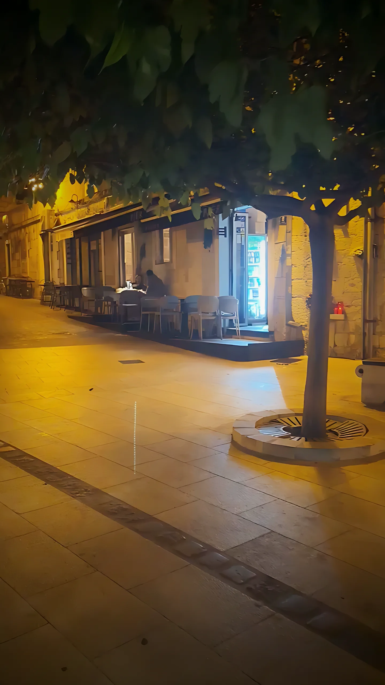
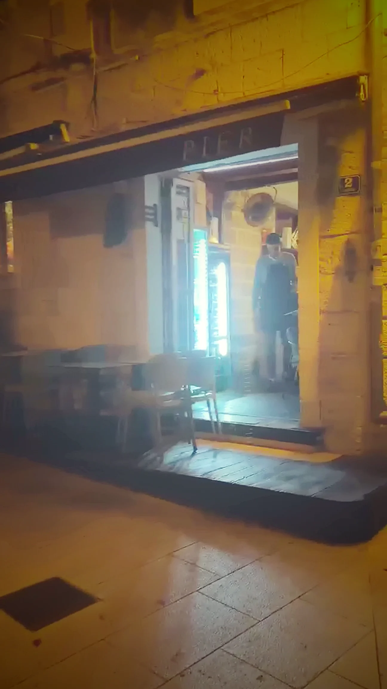
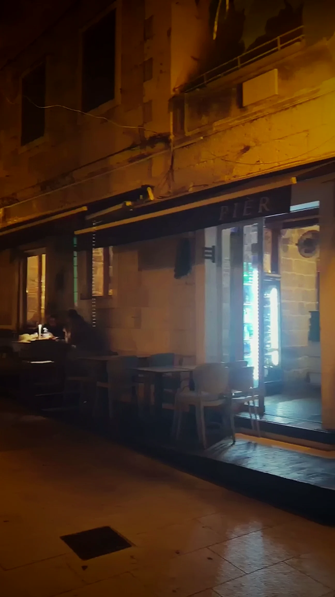
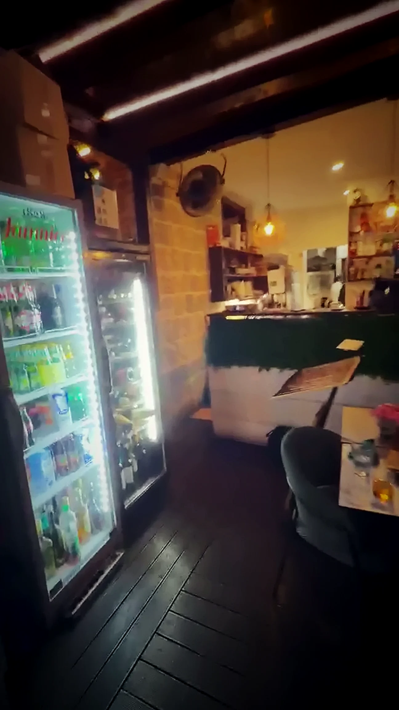
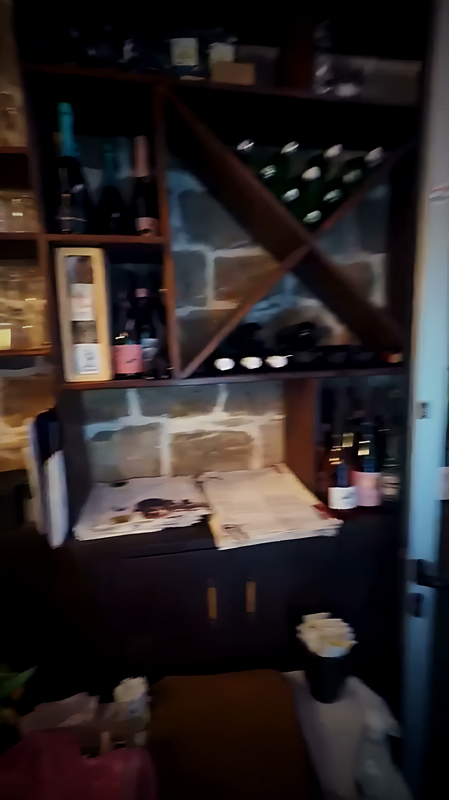
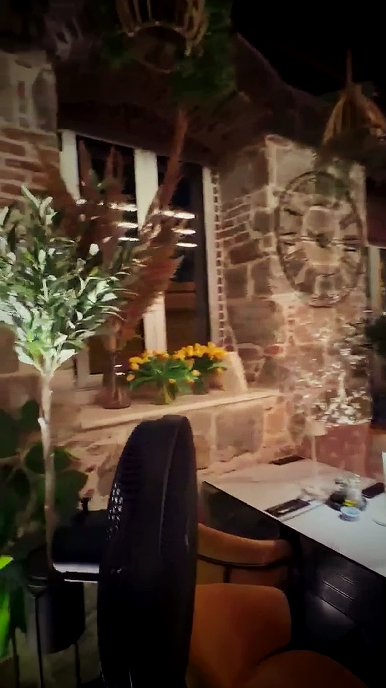
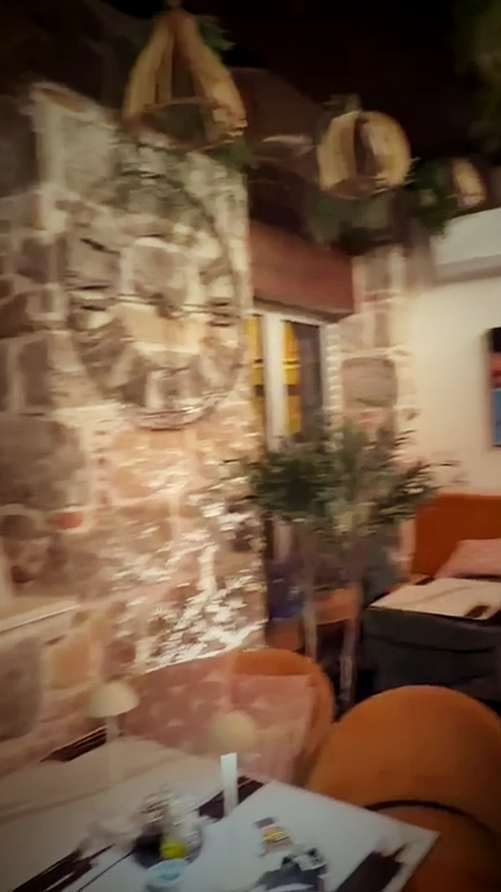

Kamena kaleta kod crkve sv. Križa
Velo Varoš, zapadno od Dioklecijanove palače. Uske ulice, kamene kuće, stube prema Marjanu.Prag koji te uvuče unutra
S terase se ulazi ravno u salu — zimi zaklonjeno, ljeti otvoreno na kaletu.Šank, police s vinima, čaše
Kava ujutro, vino navečer. Bistro radi od 07:30 do ponoći.Kamen, drvo i topla svjetlost
Goli kameni zid, drvene grede i biljke sa stropa. Mramorni stolovi pod žaruljama.I stol koji te čeka
Rezerviraj stol →
Kamene kalete zapadno od Dioklecijanove palače, mali trg kod crkve svetog Križa — i vrata koja se otvore u toplu sobu.
Velo Varoš je stara ribarska i klesarska četvrt: uske ulice, kamene kuće, stube koje vode prema Marjanu. PIER je u njoj mali bistro koji radi cijeli dan — od jutarnje kave i doručka, preko ručka, do večere koja se otegne do ponoći.
Riba, svježa tjestenina i roštilj — kuhano jednostavno, od onoga što daje Dalmacija.
Popis jela sastavljen je iz javnih izvora i treba ga potvrditi s restoranom.
Stolovi u kaleti, pod krošnjom i uličnim svjetlom. Za tople večeri i duge večere na otvorenom.
Kameni zid, drvene grede i mekana rasvjeta. Mirnije, zaklonjeno i toplo bez obzira na vrijeme.






Označeni podaci preuzeti su iz javnih izvora i čekaju potvrdu restorana.